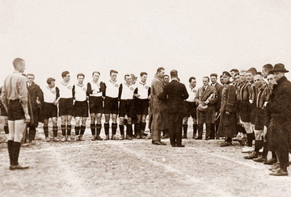

Сами по себе таблицы выглядят довольно «бедно», к тому же браузеры по-своему отображают некоторые характеристики таблиц, в частности, рамки. Вместе с тем эти недостатки легко исправить воспользовавшись мощью стилей. При этом весьма расширяются средства по оформлению таблиц, что позволяет удачно вписать таблицы в дизайн сайта и нагляднее представить табличные данные.Сами по себе таблицы выглядят довольно «бедно», к тому же браузеры по-своему отображают некоторые характеристики таблиц, в частности, рамки. Вместе с тем эти недостатки легко исправить воспользовавшись мощью стилей. При этом весьма расширяются средства по оформлению таблиц, что позволяет удачно вписать таблицы в дизайн сайта и нагляднее представить табличные данные.Сами по себе таблицы выглядят довольно «бедно», к тому же браузеры по-своему отображают некоторые характеристики таблиц, в частности, рамки. Вместе с тем эти недостатки легко исправить воспользовавшись мощью стилей. При этом весьма расширяются средства по оформлению таблиц, что позволяет удачно вписать таблицы в дизайн сайта и нагляднее представить табличные данные.